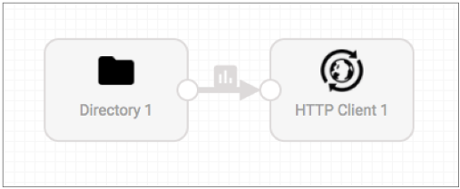

Getting Started with SDC Edge
Data Collector Edge (SDC Edge) includes several sample pipelines that make it easy to get started. You simply import one of the sample edge pipelines, create the appropriate Data Collector receiving pipeline, download and install SDC Edge on the edge device, and then run the sample edge pipeline.
Step 1. Import a Sample SDC Edge Pipeline
The Data Collector Edge GitHub repository includes sample edge pipelines. To use the sample pipelines, you first import them into Data Collector. You can edit the sample pipelines as needed and then deploy the edited versions to SDC Edge.
The sample edge pipelines use runtime parameters so that you can specify the values for pipeline properties when you start the pipeline.
In the following steps, we'll use the Directory Spooler to HTTP sample pipeline as an example. This sample edge pipeline uses a Directory origin to read a local text file on the edge device and write the data in JSON format to an HTTP Client destination, as follows:

Step 2. Create and Start a Data Collector Receiving Pipeline
Edge sending pipelines work in tandem with Data Collector pipelines. So after choosing the sample edge pipeline that you want to use, create and start the corresponding Data Collector receiving pipeline. The Data Collector receiving pipeline must start before the edge sending pipeline.
Step 3. Download and Install SDC Edge
Use Data Collector to download the SDC Edge executable along with the imported sample pipeline. Install SDC Edge on the edge device where you want to run edge pipelines.
Step 4. Start SDC Edge and the Edge Pipeline
Run a single command to manually start SDC Edge and a sample edge pipeline at the same time. You can then run additional commands to start additional pipelines and to manage running pipelines after SDC Edge is running.